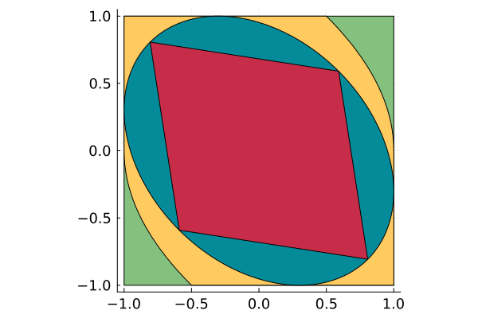
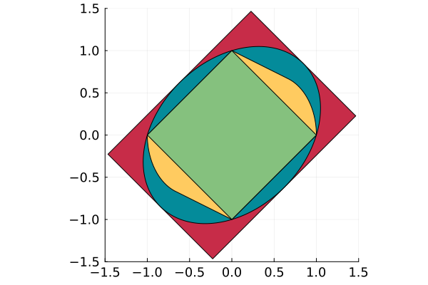
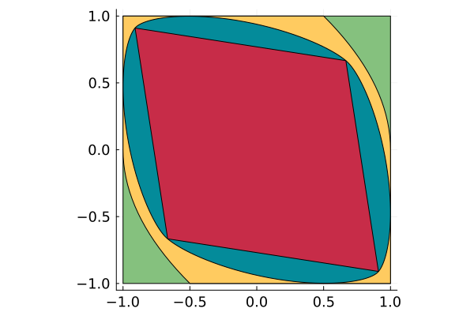
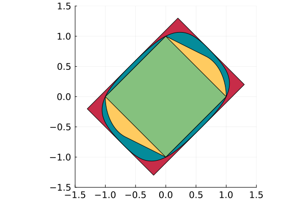
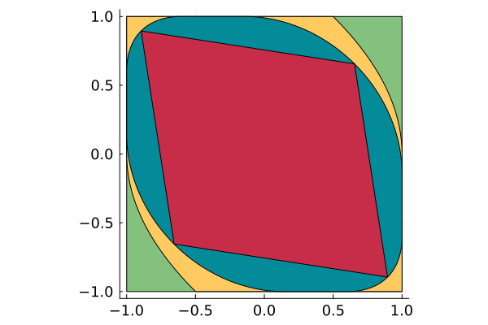
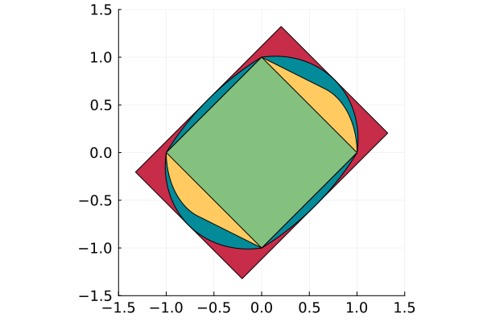

Continuous-time Controlled Invariant Set


Introduction
This reproduces reproduces the numerical result of the Section 4 of [LJ21].
This example considers the continuous-time constrained linear control system:
\[\begin{aligned} \dot{x}_1(t) & = x_2(t)\\ \dot{x}_2(t) & = u(t) \end{aligned}\]
with state constraint $x \in [-1, 1]^2$ and input constraint $u \in [-1, 1]$.
In order to compute controlled invariant sets for this system, we consider the projection onto the first two dimensions of controlled invariant sets of the following lifted system:
\[\begin{aligned} \dot{x}_1(t) & = x_2(t)\\ \dot{x}_2(t) & = x_3(t)\\ \dot{x}_3(t) & = u(t) \end{aligned}\]
with state constraint $x \in [-1, 1]^3$.
The matricial form of this system is given by $\dot{x}(t) = Ax(t) + Bu(t)$ where A and B are as defined below. As shown in Proposition 5 of [LJ21], a set is controlled invariant for this system if and only if it is invariant for the algebraic system
\[\begin{aligned} \dot{x}_1(t) & = x_2(t)\\ \dot{x}_2(t) & = x_3(t) \end{aligned}\]
The matricial form of this system is given by $E\dot{x}(t) = Cx(t)$ where
[LJ21] B. Legat and R. M. Jungers. Continuous-time controlled invariant sets, a geometric approach. 7th IFAC Conference on Analysis and Design of Hybrid Systems ADHS 2021, 2021.
A = [0.0 1.0 0.0
0.0 0.0 1.0
0.0 0.0 0.0]
B = reshape([0.0, 0.0, 1.0], 3, 1)
E = [1.0 0.0 0.0
0.0 1.0 0.0]
C = A[1:2, :]2×3 Matrix{Float64}:
0.0 1.0 0.0
0.0 0.0 1.0The invariance of a set $S$ for this system is characterized by the following condition (see Proposition 7 of [LJ21]):
\[\forall x \in \partial S, \exists y \in T_S(x), Ey = Cx.\]
The search for a set satisfying this condition can be formulated as the following set program; see [L20] for an intoduction to set programming.
[L20] Legat, B. (2020). Set programming : theory and computation. Ph.D. thesis, UCLouvain.
using SetProg
function maximal_invariant(family, γ = nothing; dirs=dirs)
model = Model(sdp_solver)
@variable(model, S, family)
@constraint(model, S ⊆ □_3)
x = boundary_point(S, :x)
@constraint(model, C * x in E * tangent_cone(S, x))
S_2 = project(S, 1:2)
if γ === nothing
@variable(model, γ)
end
for point in dirs
@constraint(model, γ * point in S_2)
end
@show γ
@objective(model, Max, γ)
@show JuMP.objective_function(model)
JuMP.optimize!(model)
@show solve_time(model)
@show JuMP.termination_status(model)
@show JuMP.objective_value(model)
if is_solved_and_feasible(model, allow_almost = true)
return JuMP.value(S), JuMP.objective_value(model)
else
return
end
end
import GLPK
lp_solver = optimizer_with_attributes(GLPK.Optimizer, MOI.Silent() => true, "presolve" => GLPK.GLP_ON)
import Hypatia
sdp_solver = optimizer_with_attributes(Hypatia.Optimizer, MOI.Silent() => true)
using Polyhedra
interval = HalfSpace([1.0], 1.0) ∩ HalfSpace([-1.0], 1.0)
lib = Polyhedra.DefaultLibrary{Float64}(lp_solver)
□_2 = polyhedron(interval * interval, lib)
□_3 = □_2 * interval
dirs = [[-1 + √3, -1 + √3], [-1, 1]]
all_dirs = [dirs; (-).(dirs)]
inner = polyhedron(vrep(all_dirs), lib)
outer = polar(inner)Polyhedron DefaultPolyhedron{Float64, Polyhedra.Intersection{Float64, Vector{Float64}, Int64}, Polyhedra.Hull{Float64, Vector{Float64}, Int64}}:
4-element iterator of HalfSpace{Float64, Vector{Float64}}:
HalfSpace([0.7320508075688772, 0.7320508075688772], 1.0)
HalfSpace([-1.0, 1.0], 1.0)
HalfSpace([-0.7320508075688772, -0.7320508075688772], 1.0)
HalfSpace([1.0, -1.0], 1.0)Ellipsoidal template
We start with the ellipsoidal template. We consider two different objectives (see Section 4.2 of [L20]):
- the volume of the set (which corresponds to $\log(\det(Q))$ or $\sqrt[n]{\det(Q)}$ in the objective function) and
- the sum of the squares of the length of its semi-axes of the polar (which corresponds to the trace of $Q$ in the objective function).
sol_ell, γ_ell = maximal_invariant(Ellipsoid(symmetric=true))
using Plots
function hexcolor(rgb::UInt32)
r = ((0xff0000 & rgb) >> 16) / 255
g = ((0x00ff00 & rgb) >> 8) / 255
b = ((0x0000ff & rgb) ) / 255
Plots.RGBA(r, g, b)
end # Values taken from http://www.toutes-les-couleurs.com/code-couleur-rvb.php
lichen = hexcolor(0x85c17e)
canard = hexcolor(0x048b9a)
aurore = hexcolor(0xffcb60)
frambo = hexcolor(0xc72c48)
cols = [canard, frambo]
x2 = range(0, stop=1, length=20)
x1 = 1 .- x2.^2 / 2
upper = [[[-1, 1]]; [[x1[i], x2[i]] for i in eachindex(x2)]]
mci = polyhedron(vrep([upper; (-).(upper)]), lib)
polar_mci = polar(mci)
SetProg.Sets.print_support_function(project(sol_ell, 1:2))γ = γ
JuMP.objective_function(model) = γ
solve_time(model) = 0.0036749839782714844
JuMP.termination_status(model) = ALMOST_OPTIMAL
JuMP.objective_value(model) = 0.8068982007566238
h(S, x) = x[2]^2 - 0.604338*x[1]*x[2] + x[1]^2We can plot the primal solution as follows:
function primal_plot(set, γ=nothing; npoints=256, xlim=(-1.05, 1.05), ylim=(-1.05, 1.05), args...)
plot(ratio=:equal, tickfont=Plots.font(12); xlim=xlim, ylim=ylim, args...)
plot!(□_2, color=lichen)
plot!(mci, color=aurore)
plot!(set, color=canard, npoints=npoints)
γ === nothing || plot!(γ * inner, color=frambo)
plot!()
end
primal_plot(project(sol_ell, 1:2), γ_ell)
and the dual plot as follows:
function polar_plot(set, γ; npoints=256, xlim=(-1.5, 1.5), ylim=(-1.5, 1.5), args...)
plot(ratio=:equal, tickfont=Plots.font(12); xlim=xlim, ylim=ylim, args...)
γ === nothing || plot!(inv(γ) * outer, color=frambo)
plot!(polar(set), color=canard, npoints=npoints)
plot!(polar_mci, color=aurore)
plot!(polar(□_2), color=lichen)
end
polar_plot(project(sol_ell, 1:2), γ_ell)
Polyset template
p4, γ4 = maximal_invariant(PolySet(symmetric=true, degree=4, convex=true), 0.91)
γ40.91Below is the primal plot:
primal_plot(project(p4, 1:2), γ4)
and here is the polar plot:
polar_plot(project(p4, 1:2), γ4)
Piecewise semi-ellipsoidal template
sol_piece_◇, γ_piece_◇ = maximal_invariant(Ellipsoid(symmetric=true, piecewise=polar(□_3)), dirs=all_dirs)
γ_piece_◇0.8948888763884202Below is the primal plot:
primal_plot(project(sol_piece_◇, 1:2), γ_piece_◇)
and here is the polar plot:
polar_plot(project(sol_piece_◇, 1:2), γ_piece_◇)
This page was generated using Literate.jl.